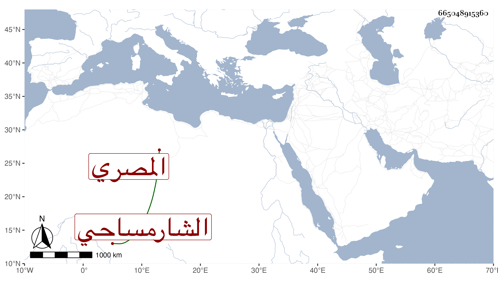

0902Sakhawi.DawLamic.ITO20230111-ara1.EIS1600.665048915360
Biography ID: 665048915360
578
محمد بن محمد بن محمد بن عبد الله العز بن القطب الشارمساحي بمهملتين وراء مكسورة ثم ميم ساكنة وحاء مهملة ثم المصري ويعرف بابن أخي طلحة . أحضر وهو صغير على الميدومي ثم سمع على القلانسي وكذا على محمد بن إسماعيل ابن جهبل وعمر بن إبراهيم بن النقبي معجم ابن جميع وأجاز له العز بن جماعة سنة خمس وستين فهرست مروياته المعين بالسماع والإجازة وباشر توقيع الحكم وولي شهادة ديوان طشتمر واعتنى أخيرا بعمل الأشياء المستظرفة من المأكول وغيره وصار بيته مأوى الرؤساء . ذكره شيخنا في معجمه وقال : قرأت عليه بعض معجم ابن جميع . مات في رجب سنة ثلاث زاد في إنبائه ولم يكمل الخمسين وكان وجيها عند الرؤساء وبيته مجمعا لهم . وهو في عقود المقريزي وأثنى على حشمته ورياسته ووجاهته مع بشاشة وحسن ملتقى ورغبة في الإطعام وقضاء الحوائج وأنه صحبه مدة عندا لبدر بن أبي البقاء ولكنه امتحن بفساد عقله قبل موته رحمه الله .
